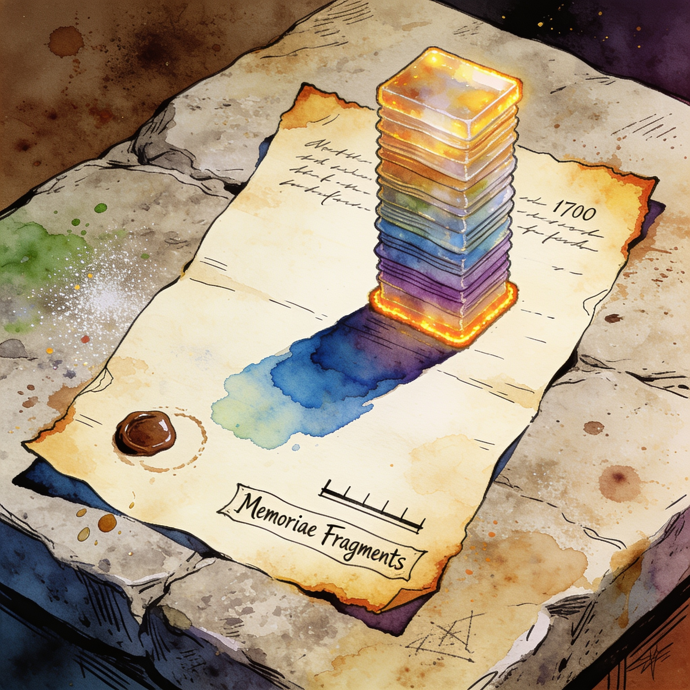

Memory squeeze
The AI boom is now a line item on your next laptop receipt
Memory price trackers show the HBM4 ramp starving commodity DRAM: Samsung and SK Hynix fell below 10 days of finished DRAM inventory on September 7, and HBM3E 36GB 12-Hi stacks listed at $300.87 (+14% year on year) on September 13. A 32GB DDR5 kit that cost $80-120 in early 2025 was near $529 by mid-2026. New fab output from Samsung, SK Hynix and Micron is not expected to bring meaningful relief before mid-2027 or 2028, so plan a local rig budget around sustained memory inflation.